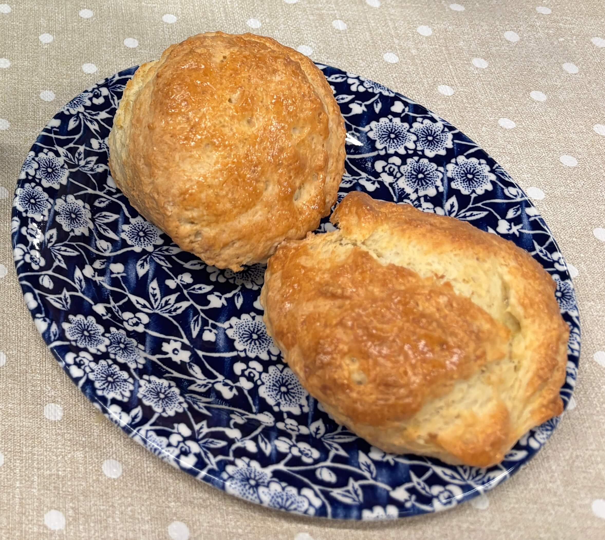

Home
Scones

Ingredients
- 125g flour
- 25g superfine/baker/caster sugar
- 1.5 teaspoons baking powder
- 25g cold salted butter
- 35ml buttermilk (or yogurt)
Steps
- Preheat oven to 375 F
- Combine the flour, sugar, baking powder, and salt in a mixing bowl. Stir until evenly mixed.
- In a seperate jug, whisk together the egg and buttermilk. Be careful not to overmix.
- Add the cold butter to the dry ingredients. Rub it in quickly with your fingers until the mixture resembles course crumbs. Try to work quickly so the butter doesn't melt.
- Pour the egg mixture into the dry ingredients and gently mix until the dough just comes together. If the dough feels too wet, you can add a little extra flour.
- Turn the dough out onto a lightly floured surface and press or roll it out to about 2cm thick.
- Cut the dough into your desired scone shapes and place them on a lined baking tray.
- Brush the tops of the scones with beaten egg yolk for a golden finish.
- Bake in preheated oven for 8 to 10 minutes, or until the scones are golden brown.
- Enjoy with jam, clotted cream, and tea.